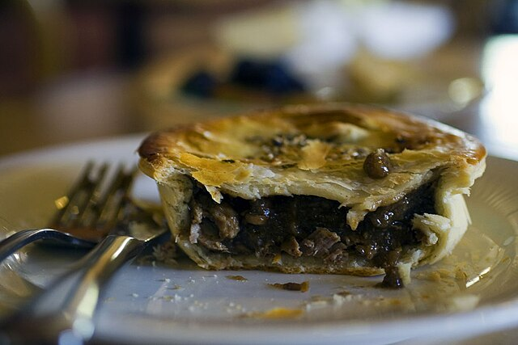

Lamb Pies

Description
A great way to use up left over roast lamb
Ingredients
- 1/4 cup olive oil
- 1kg diced lamb (Left over roast lamb works well)
- 1 red onion, thinly sliced
- 4 garlic cloves, thinly sliced
- 500g golden delight potatoes, peeled, cubed
- 2 carrots, peeled, cubed
- 1/2 cup tomato paste
- 1/3 cup gravy powder
- 3 cups Massel beef stock
- 2 tbsp worcestershire sauce
- 2 tbsp chopped fresh rosemary
- 2 tbsp cornflour
- 4 sheets frozen ready-rolled puff pastry, partially thawed
- 1 egg, lightly beaten
Method
- Heat 1 tablespoon oil in a large saucepan over medium-high heat. Add half the lamb. Cook, stirring occasionally, for 5 minutes or until browned. Transfer to a plate. Repeat with 1 tablespoon oil and remaining lamb.
- Heat remaining oil in pan over medium-high heat. Add onion and garlic. Cook, stirring, for 3 minutes or until soft. Add potatoes and carrots. Cook, stirring, for 5 minutes or until browned. Add tomato paste and gravy powder. Cook, stirring, for 1 minute.
- Return lamb to pan. Add stock and worcestershire sauce. Increase heat to high. Bring to the boil. Reduce heat to low. Simmer, covered, stirring occasionally, for 2 hours or until lamb is tender. Stir in rosemary. Season with salt and pepper.
- Combine cornflour and 2 tablespoons warm water. Add to lamb mixture. Simmer for 1 minute. Remove from heat. Cool.
- Preheat oven to 200°C/180°C fan-forced. Lightly grease two 3cm-deep, 20cm (base) round glass or ceramic pie dishes. Line base and sides of each dish with 1 sheet of pastry, trimming excess. Place each dish on a baking tray. Line pastry cases with baking paper. Fill with uncooked rice or ceramic pie weights. Bake for 10 minutes. Remove baking paper and rice or weights.
- Divide lamb mixture between pastry cases. Place remaining pastry sheets over filling. Trim. Press edges together with a fork to seal. Prick top of pastry with a fork. Brush with egg.
- Bake for 25 to 30 minutes or until pastry is golden. Remove from oven. Allow to stand for 5 minutes before serving.